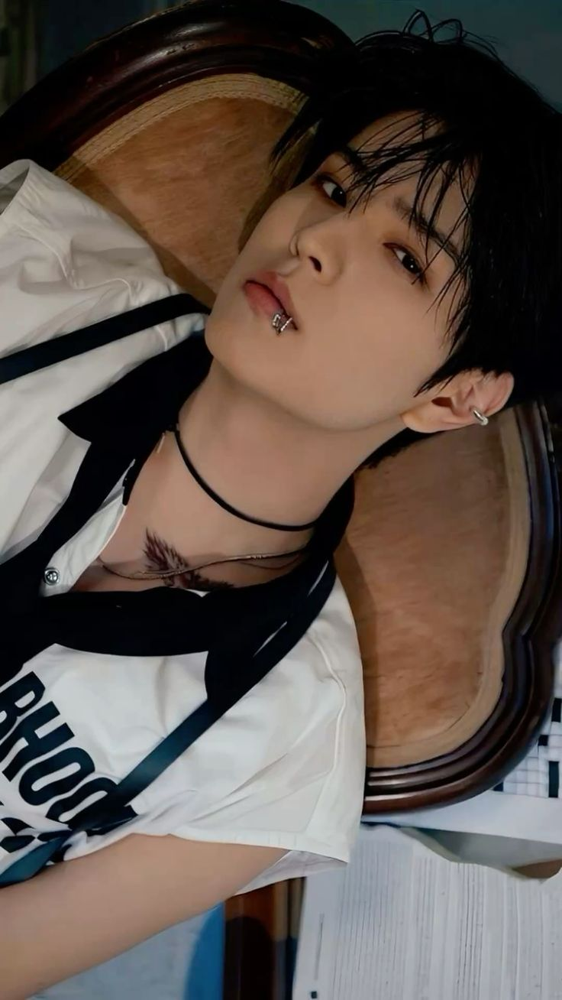

Kim Seung Min (김승민)
Perfil del Artista
Temas para K-Dramas (OST)
All I Want Is You - Tema para Would You Marry Me (2025)
My Destiny - Tema para The Potato Lab (2025)
Destiny - Tema para The Midnight Studio (2024)
Close to You - Tema para Love in Contract (2022)
Here Always - Tema para Hometown Cha Cha Cha (2021)
Programas de Televisión
We K-Pop (KBS, 2019) MC junto a In Seong, Kim Shin Young y Nichkhun
After School Club (Arirang TV, 2018) MC Principal
Stray Kids (Mnet, 2017) - Programa de supervivencia
Programas de Radio
2019: (SBS) Power FM Young Street Radio (15.04.2019) junto a Hyun Jin, Han y Felix
2018: (MBC) Idol Radio (12.11.2018) Ep. 42 junto a San Ha, Yoo Seon Ho y Lee Eui Woong
2018: (SBS) Power FM 'NCT Night Night Radio' (15.11.2018) junto a I.N, Han, Felix y Hyun Jin
Curiosidades
Estudios: Cheongdam High School (Graduado).
Modelos a seguir: DAY6 y Sandeul de B1A4.
Hobbies: Escribir en su diario personal, escuchar música y salir a caminar.
Idiomas: Coreano (Materna) e Inglés (Intermedio-Avanzado).
Artistas favoritos: Shawn Mendes y DAY6.
Comida favorita: Platos con huevo y postres.
Se unió a JYP Entertainment tras obtener el segundo lugar entre cientos de participantes en la 13ª audición abierta de la agencia en 2016.
Perteneció a la prestigiosa escuela vocal "M ACADEMY".
Tiene registradas 9 canciones con derechos de autor a su nombre ante la KOMCA.
Es ampliamente elogiado por críticos musicales por su tono vocal dulce, emotivo y su impecable dicción.
Galería de Fotos


